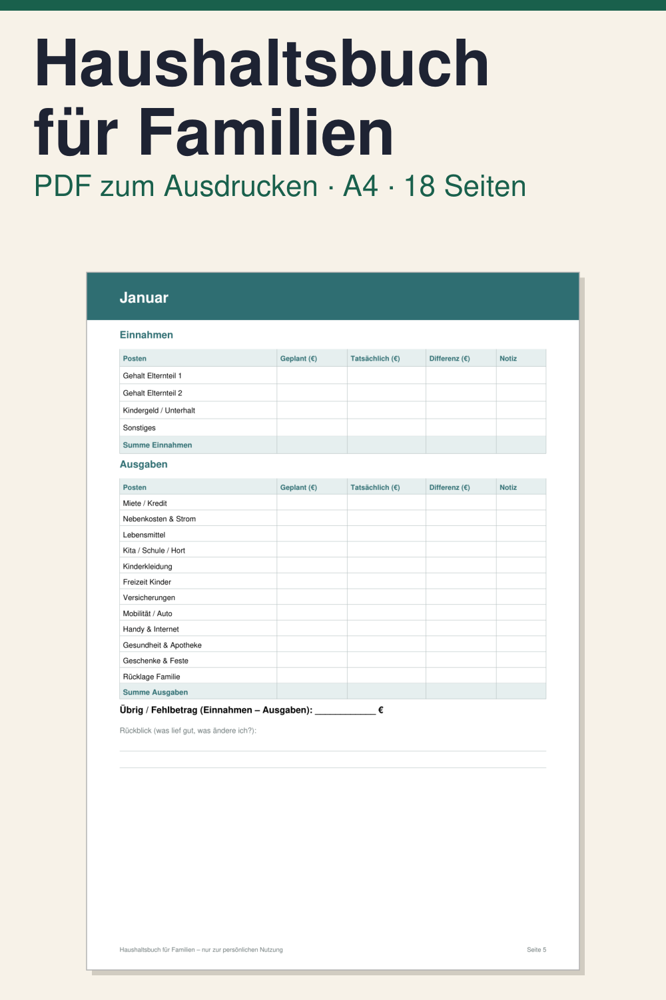

Haushaltsbuch Vorlage für Familien zum Ausdrucken

Mit diesem Haushaltsbuch zum Ausdrucken planen Sie Einnahmen und Ausgaben Ihrer Familie für jeden Monat und vergleichen sie mit den tatsächlichen Zahlen. Es hat Posten für Kita, Schule und Hort, Kinderkleidung und die Freizeit der Kinder.
Das PDF hat 18 Seiten im Format DIN A4 hochkant, auf Deutsch. Enthalten sind: Deckblatt und Anleitung (2 Seiten), eine Zielseite mit Familien-Sparziel und anstehenden Großausgaben, eine Übersicht der festen Kosten, 12 Monatsseiten von Januar bis Dezember mit den Spalten Geplant, Tatsächlich, Differenz und Notiz sowie einem Rückblick, eine Jahresübersicht und ein Ausgaben-Protokoll.
So nutzen Sie es: PDF herunterladen, zu Hause oder im Copyshop ausdrucken und mit Stift ausfüllen. Das PDF ist nicht digital ausfüllbar. Es ist ein digitaler Download, es wird nichts per Post verschickt. Das Haushaltsbuch ist eine Aufschreibhilfe und keine Finanz-, Rechts- oder Steuerberatung. Es verspricht keine bestimmten Ergebnisse.
Hinweis: Alle Inhalte von Klarblatt, auch Vorlagen, Texte und Videos, werden vollständig von KI (Claude, Anthropic) erstellt, ohne kreativen Beitrag eines Menschen.
Vorlage vollständig von KI erstellt, Layout per Software erzeugt.